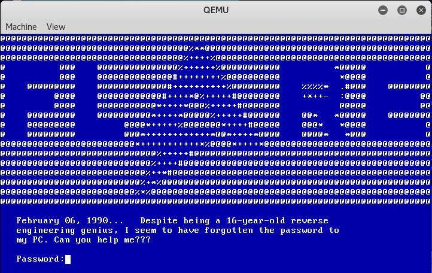
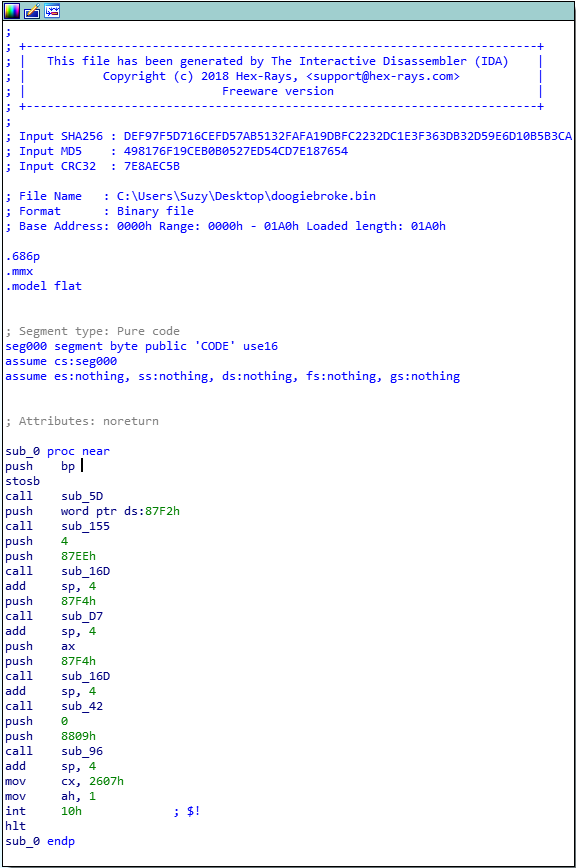
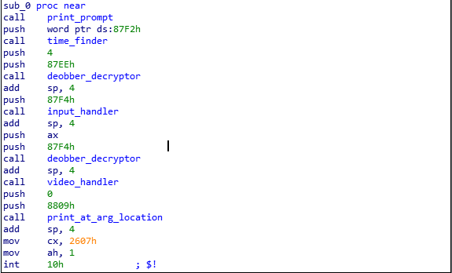
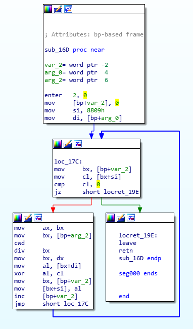
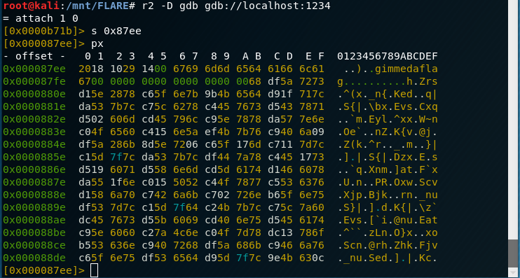
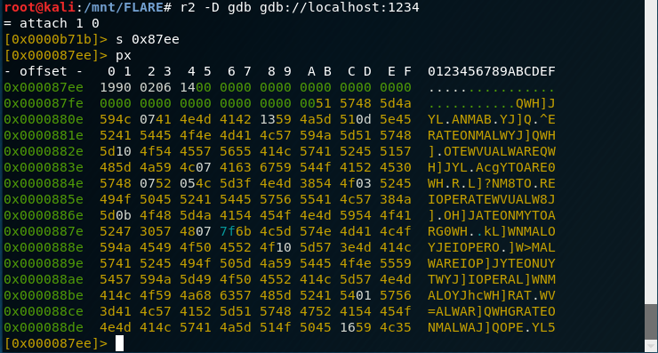
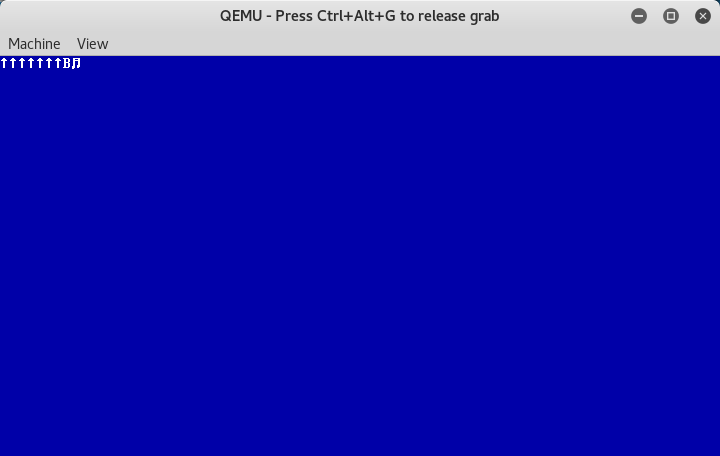
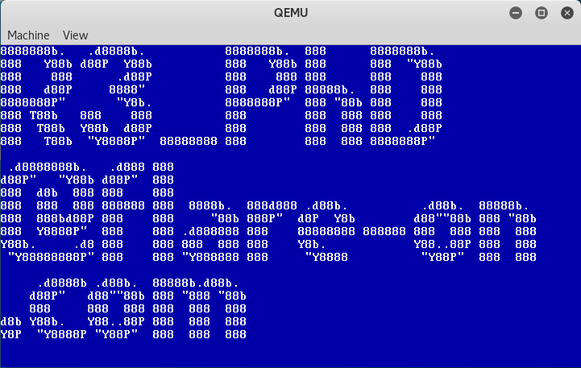

Challenge 8 "Doogie Hacker":
Challenge 8 starts out by telling us that the given file is a dump of the first 1000 Bytes of a hard drive. Being the first 1000 Bytes of a drive, this cannot be an exe or elf or other similar format. This is a boot sector.
We can use Qemu to boot this drive by passing it in as a raw drive(shown below). The -s flag starts a gdb server on localhost:1234, which we will use later.
# qemu-system-i386 -s -hda doogie.bin

Booted in Qemu
Not to dissimilar from other crackme's, this one displays some text and prompts for a password. In this case the story presented is that it is 1990 and a computer genius has forgotten his password and wants you to crack what is likely his own custom hard drive encryption.
Next step is to find the code to analyze. In the hex editor, there is a block of what looks to be code just above our data(the big FLARE ascii art) that is printed to the screen upon running. For the sake of organization, I chose to copy this block out into its own file to drag into IDA. IDA wants us to tell it what bit mode to disassemble our file as. At this point in the boot cycle, the processer is still in
Real mode, and code would be 16 bit.

Disassembled code
The assembly looks correct to me. Time to start the real work!
One thing that i was unfamiliar with stepping into this challenge that we see often is the "INT" instruction. Typical executables do not use this instruction. Quick research showed that this is the
Interupt instruction. The most common uses of INT within this code is
INT 10h,
INT 16h, and a single function which calls
INT 1Ah. These instructions interact with Video, Keyboard, and System Time respectively in Real mode. In the context of our analysis, these serve a similar purpose to API calls, giving us some context of intent to our functions. Analysis of these instructions allows us to name our functions.

Renamed functions for context
One of these functions has a fairly obvious XOR decryption routine. Once identified, we just need to follow the data to find where our key is, and where our data is.
in this order, one run through our for loop will
- Move our incrementing counter into bx. We can tell this is our counter by the 'inc [bp+var_2]' instruction at the end of the while loop.
- Add bx(counter) and si(previously set to '8809h'), dereference the result, then move it into cl. Next instruction is a cmp cl,0 which ensures there is a value in cl.
- Divide our incrementing counter(ax) by an argument passed into the function(set to bx) and move the remainder(dx) into bx. This is a typical modulus operation. This operation is often used to continually iterate over a string of a certain length(modulus divisor) given an incrementing counter.
- Add the modulo result(bx) and di(a passed in argument), dereference the result, then move it into al.
- XOR al and cl, storing the result in al.
- Add our counter(moved into bx) to the previously set static value 8809h(stored in si), dereference the result, then move al(result of XOR) into that location

XOR decryption
The most interesting thing that we see is the fact that our static value 8809h is added to a counter then dereferenced. Only pointers are dereferenced, which indicates that either the key or the data is at location 8809h. Since the XOR'd data is later stored back into location 8809h, we can assume this is our data. The second most interesting thing to be seen is that this loop is taking the result of a modulus operation and adding it to one of the arguments passed into our function, then dereferencing it. Again, only pointers are dereferenced. This gives us the location of the key.
This function is called twice though. The first time is right after we discover the date and time from the system, with the arguments to the decryptor being "87EEh,4h" and the second time is after we input the password, with the arguments to the decryptor being "87F4h,ax". This makes 87EEh and 87F4h two separate key locations, and 4h and the value stored in ax two separate modulo divisors which we are expecting to be string lengths.
Since our two decryption(deobber_decryptor) calls occur immediately after our system time(time_finder) and password input(input_handler) calls respectively, the returns from these calls are likely used as the keys and modulo divisors. We can prove this by running our program to the point where we have given a password and about to press enter and attaching a debugger to view the memory.

r2 attached to remote gdb served by Qemu
NOW is the funnest part! The author dropped us a hint that we should use. The prompt text states
"February 06,1990... Despite being a 16-year-old reverse engineering genius, I seem to have forgotten the password to my PC. Can you help me???". The date is used as part of the decryption, and the author has given us the date! lets use '
faketime' to give Qemu the time that our code wants, then we'll view the result in our debugger.
# faketime '1990-02-06 01:00:00' qemu-system-i386 -s -hda doogie.bin

Soclose.exe
Some may immediately notice that there are english words viewable within our XOR encrypted data. One interesting thing about XOR is that XOR'ing a null byte(0x00) against any key will result in the key being the answer. This means that long segments of null bytes will reveal XOR keys. Similarly, XOR'ing lower case characters by 0x20(ASCII space) will give the upper case equivilant of that character, which also has the tendency to reveal plaintext keys.
Careful inspection leads us to recognize the string 'IOPERATEONMALWARE' as a possible answer. Since we dont know if the flag contains null bytes or lots of space characters, we might as well try both.
The lower case
'ioperateonmalware' appears to be the correct answer! giving the flag
'R3_PhD@flare-on.com'

Result of IOPERATEONMALWARE

Result of ioperateonmalware
The lower case 'ioperateonmalware' appears to be the correct answer! giving the flag 'R3_PhD@flare-on.com'